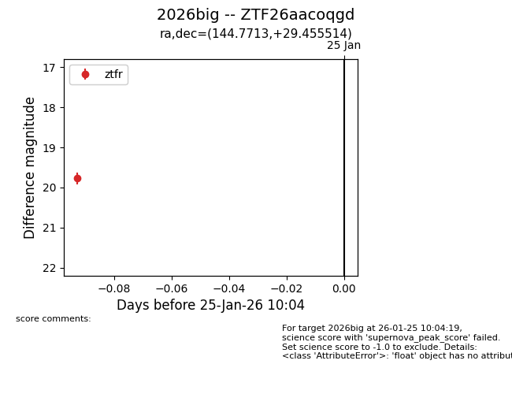
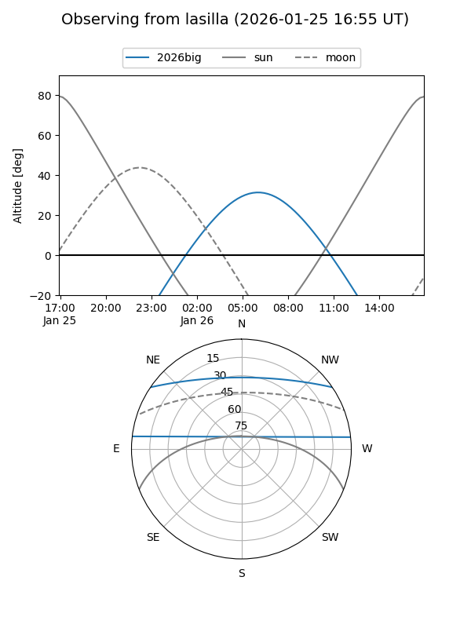
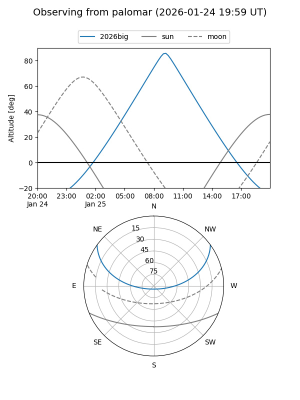

2026big
Target 2026big at 2026-01-25 10:06
Aliases and brokers:
FINK: link
Lasair: link
ALeRCE: link
TNS: link
YSE: link
alt names
ZTF26aacoqgd (ztf,fink_ztf)
2026big (tns,yse)
Coordinates:
equatorial (ra, dec) = 144.7713,+29.45551
equatorial (HMS+DMS) = 09:39:05.11,+29:27:19.85
galactic (l, b) = (198.0306,+47.89199)
Flags:
Photometry:
last ztfr=19.77
1 ztfr detections
Lightcurve

Visibility


Additional plots